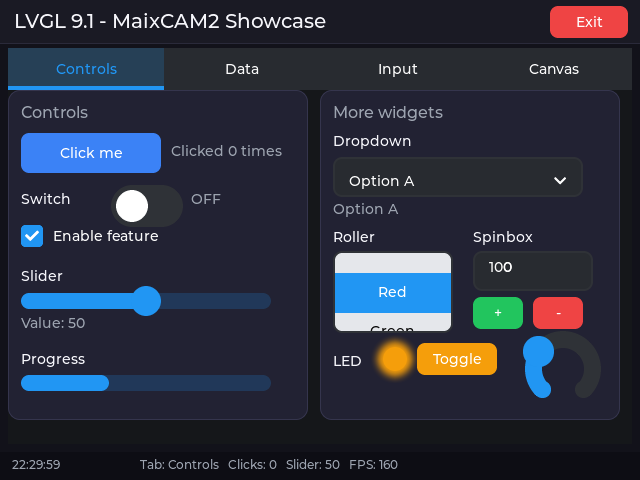
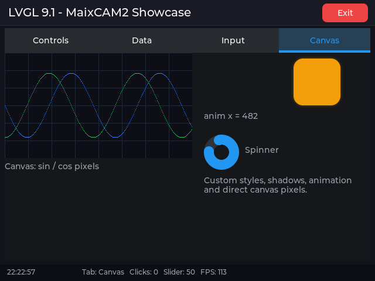
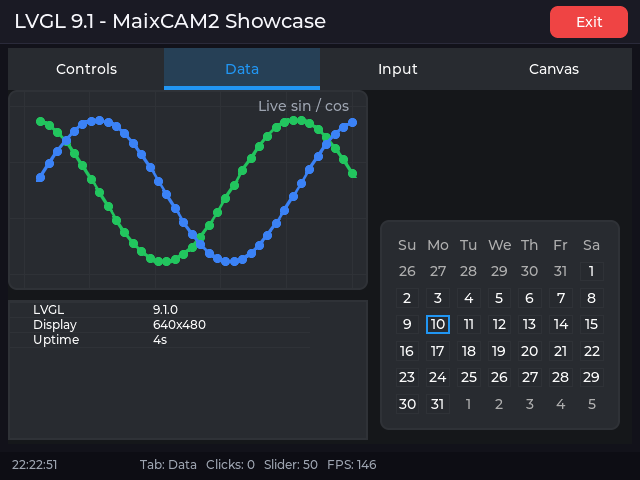
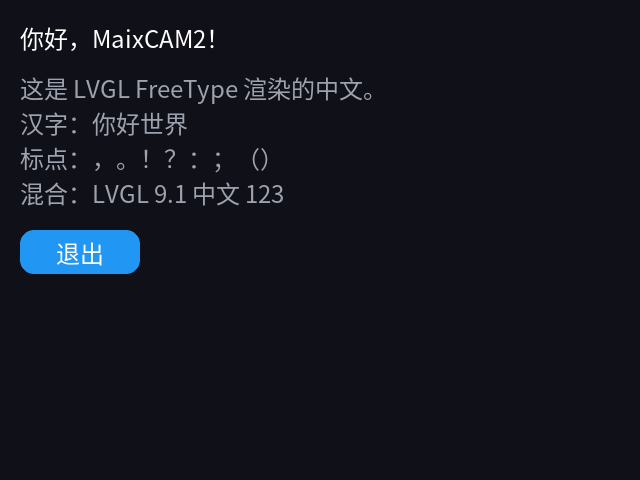
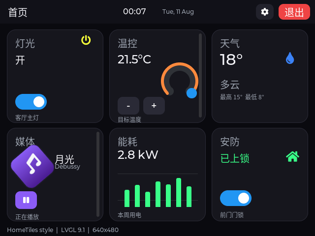
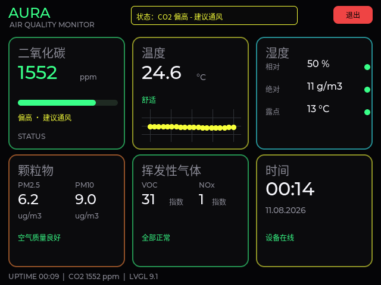
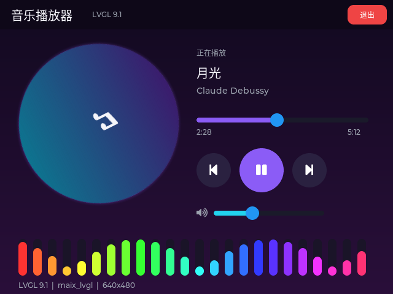
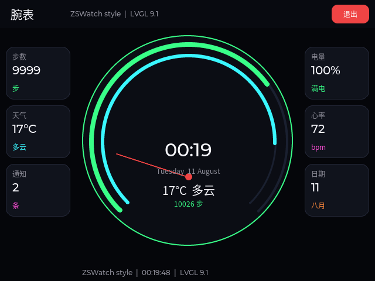

中文
中文LVGL 图形界面
更新历史
| 日期 | 版本 | 作者 | 更新内容 |
|---|---|---|---|
| 2026-11-24 | v0.1.1 | Ariel Yu | 补充 Python LVGL 安装、入门示例、中文字体和桌面 SDL 调试说明 |
| 2026-11-10 | v0.1.0 | Tao | 增加 LVGL 图形界面代码和文档支持 |
什么是 maix_lvgl
maix_lvgl 为 MaixPy 提供 LVGL 9.1 的 Python 绑定，API 与
MicroPython 的 lvgl 模块保持一致，可以直接用 import maix_lvgl as lv 编写界面。
它把 LVGL 渲染结果通过 maix.display.Display 显示到屏幕，并把
maix.touchscreen.TouchScreen 的触摸事件接入 LVGL 的指针输入设备，因此在
MaixCAM / MaixCAM2 上不需要额外的显示驱动代码。

主要特性：
- 完整的 LVGL 9.1 控件：按钮、标签、滑块、开关、下拉框、图表、画布、键盘等
- 样式系统：颜色、圆角、边框、阴影、渐变、字体
- 布局：绝对定位、对齐、Flex、Grid
- 事件、定时器、动画
- Canvas 逐像素绘制、Chart 实时曲线
- FreeType 运行时字体，可显示中文
- 纯 Python 主循环，易于和 MaixPy 的摄像头、AI、网络功能组合
安装
maix_lvgl 是独立的 Python 包。PyPI 包名为 maix-lvgl，导入名为 maix_lvgl。
下表的验证状态来自 v0.1.1 发布说明。
| 平台 | 架构 | Python 版本 | 状态 |
|---|---|---|---|
| MaixCAM2 | aarch64 | 3.13 | 已实机验证 |
| MaixCAM / MaixCAM-Pro | RISC-V 64 | 3.11 | 已提供 wheel，未实机验证 |
| 桌面 Linux（SDL 窗口） | x86_64 | 3.13 | 已在 WSL 验证 |
| Windows（SDL 窗口） | x86_64 | 3.13 | 已交叉编译，未实机验证 |
在线安装
python3 -m pip install maix-lvgl==0.1.1
离线安装
从 v0.1.1 发布页 下载匹配的 wheel。设备端可用 MaixVision 文件管理把
文件上传到 /root。例如，在 MaixCAM2 的终端运行：
python3 -m pip install /root/maix_lvgl-0.1.1-cp313-cp313-manylinux2014_aarch64.whl
MaixCAM / MaixCAM-Pro 使用 cp311-cp311-musllinux_1_2_riscv64。
桌面 x86_64 使用 Python 3.13，Linux 下载带 manylinux 标签的 wheel，Windows 下载
带 win_amd64 标签的 wheel。
安装后在终端确认版本：
python3 -c "import maix_lvgl as lv; print(lv.__version__)"
在设备上运行前，请关闭占用屏幕的应用，或通过 MaixVision 进入开发模式。
快速开始
新建一个 main.py，在 MaixVision 中运行下面的代码：
import time
from maix import app, display, touchscreen
import maix_lvgl as lv
disp = display.Display()
ts = touchscreen.TouchScreen()
try:
lv.init(disp, ts) # 把 MaixPy 的屏幕和触摸屏交给 LVGL
scr = lv.screen_active() # 当前的活动屏幕
btn = lv.button(scr) # 在屏幕上创建一个按钮
btn.set_size(240, 120) # 按钮大一点，方便点击
btn.center()
label = lv.label(btn) # 按钮上放一个标签
label.set_text("Click me") # 注意：默认字体没有中文字形，中文见下文「显示中文」
label.center()
count = [0]
def on_clicked(event):
count[0] += 1
label.set_text("Clicked %d" % count[0])
print("clicked", count[0])
btn.add_event_cb(on_clicked, lv.EVENT.CLICKED, None) # 注册点击事件
while not app.need_exit():
lv.timer_handler() # 处理 LVGL 的定时器和界面刷新，必须调用
time.sleep(0.005) # 让出 CPU
finally:
lv.deinit() # 释放 LVGL
ts.close()
disp.close()
运行后屏幕中间会出现一个按钮和一个标签，点击按钮，标签上的文字会变成点击次数，同时终端会打印 clicked 1、clicked 2……
lv.init(disp, ts)创建 LVGL 显示和触摸输入设备；传False可以关闭触摸。lv.timer_handler()每次推进 LVGL tick 并处理定时器、输入和重绘。它已经
代替了lv_tick_inc()，不要直接调用原始lvgl.timer_handler()。lv.deinit()释放 LVGL 和它创建的驱动资源。- 主循环中
time.sleep(0.005)只是让出 CPU，LVGL 的实际刷新由
timer_handler()驱动。
在电脑上调试界面（可选）
同一个包在桌面 Linux / Windows 上会自动使用 LVGL 的 SDL 窗口，而不是 MaixPy 的屏幕，所以可以先在电脑上把界面调好，再上板运行：
import time
import maix_lvgl as lv
lv.init(800, 600) # SDL 窗口大小
scr = lv.screen_active()
label = lv.label(scr)
label.set_text("Hello LVGL")
label.center()
try:
while True:
lv.timer_handler()
time.sleep(0.01)
except KeyboardInterrupt:
pass
finally:
lv.deinit()
maix_lvgl 会自动判断当前环境：能导入 maix（在设备上）就用 MaixPy 的屏幕和触摸屏，否则创建一个 SDL 窗口并用鼠标、键盘输入。
在 Linux 上优先使用 PyPI 的 manylinux wheel。使用 GitHub Release 中的
linux_x86_64 wheel 时，需要系统安装 SDL2。
核心概念
| 概念 | 说明 |
|---|---|
| display | LVGL 的显示设备，由 lv.init() 根据 MaixPy display 创建 |
| screen | 根对象，用 lv.screen_active() 获取，所有控件都挂在它下面 |
| widget / obj | 控件，如 lv.button、lv.label、lv.slider，第一个参数是父对象 |
| style | 样式属性，通过 set_style_* 设置，第二个参数是状态选择器 |
| event | 事件，通过 add_event_cb() 注册回调 |
| timer | LVGL 定时器，用 lv.timer_create() 创建 |
| anim | 动画，用 lv.anim_t() 创建并 start() |
LVGL 采用父子对象树：父对象删除时会自动删除子对象。Python 变量只是底层
LVGL 对象的包装，短期变量不会阻止控件显示；但回调函数、动画、Canvas 缓冲区
等需要保持 Python 引用，否则可能被垃圾回收。
创建控件
所有控件都以父对象为第一个参数：
scr = lv.screen_active()
label = lv.label(scr)
button = lv.button(scr)
slider = lv.slider(scr)
switch = lv.switch(scr)
chart = lv.chart(scr)
canvas = lv.canvas(scr)
常用控件：
| 控件 | 用途 |
|---|---|
lv.label |
文本 |
lv.button |
按钮 |
lv.switch / lv.checkbox |
开关 / 复选框 |
lv.slider / lv.bar / lv.arc |
滑块 / 进度条 / 圆弧 |
lv.dropdown / lv.roller |
下拉框 / 滚轮选择 |
lv.textarea / lv.keyboard |
文本输入 / 屏幕键盘 |
lv.chart |
折线图、柱状图、散点图 |
lv.table / lv.calendar |
表格 / 日历 |
lv.canvas |
逐像素绘制 |
lv.list / lv.msgbox |
列表 / 消息框 |
lv.spinner / lv.led |
加载动画 / LED 指示灯 |
控件常用操作
label = lv.label(scr)
label.set_text("Temperature: 25.3 °C")
label.set_pos(20, 20)
label.set_style_text_color(lv.color_hex(0xE5E7EB), 0)
label.set_style_text_font(lv.font_montserrat_16, 0)
slider = lv.slider(scr)
slider.set_pos(20, 60)
slider.set_size(220, 16)
slider.set_range(0, 100)
slider.set_value(50, lv.ANIM_ENABLE.OFF)
bar = lv.bar(scr)
bar.set_pos(20, 100)
bar.set_size(220, 12)
bar.set_range(0, 100)
bar.set_value(65, lv.ANIM_ENABLE.OFF)
switch = lv.switch(scr)
switch.set_pos(20, 130)
switch.add_state(lv.STATE.CHECKED)

set_value() 的第二个参数传入 lv.ANIM_ENABLE.OFF 可以立即生效；传入
lv.ANIM_ENABLE.ON 会使用默认动画过渡。
样式
LVGL 的样式通过 set_style_* 方法直接设置在对象上。第二个参数是选择器：
0：主部件（LV_PART_MAIN）的默认状态lv.STATE.PRESSED：按下状态lv.STATE.CHECKED：选中状态
颜色与透明度
color = lv.color_hex(0x3B82F6) # RGB
scr.set_style_bg_color(color, 0)
scr.set_style_bg_opa(lv.OPA.COVER, 0) # 完全不透明
panel.set_style_bg_opa(lv.OPA._70, 0) # 70% 不透明度
lv.OPA 提供 TRANSP、_10 到 _90、COVER 等常用值。
圆角、边框、阴影
card = lv.obj(scr)
card.set_size(220, 120)
card.set_style_bg_color(lv.color_hex(0x1E293B), 0)
card.set_style_bg_opa(lv.OPA.COVER, 0)
card.set_style_radius(14, 0)
card.set_style_border_width(1, 0)
card.set_style_border_color(lv.color_hex(0x334155), 0)
card.set_style_shadow_width(18, 0)
card.set_style_shadow_color(lv.color_hex(0x3B82F6), 0)
card.set_style_shadow_opa(lv.OPA._50, 0)
card.set_style_pad_all(12, 0)
渐变背景
card.set_style_bg_color(lv.color_hex(0x0F172A), 0)
card.set_style_bg_grad_color(lv.color_hex(0x1E3A8A), 0)
card.set_style_bg_grad_dir(lv.GRAD_DIR.VER, 0)
文本样式
label.set_style_text_color(lv.color_hex(0xF8FAFC), 0)
label.set_style_text_font(lv.font_montserrat_20, 0)
label.set_style_text_letter_space(2, 0)
内置 Montserrat 字体只覆盖拉丁字符；中文需要 FreeType，见下文。
状态样式
同一个对象可以为不同状态设置不同样式：
btn.set_style_bg_color(lv.color_hex(0x2563EB), 0)
btn.set_style_bg_color(lv.color_hex(0x1D4ED8), lv.STATE.PRESSED)
布局与对齐
绝对定位
obj.set_pos(x, y)
obj.set_x(x)
obj.set_y(y)
obj.set_size(width, height)
对齐
obj.align(lv.ALIGN.CENTER, 0, 0)
obj.align(lv.ALIGN.TOP_RIGHT, -10, 10)
obj.center()
lv.ALIGN 包含 TOP_LEFT、TOP_MID、CENTER、BOTTOM_RIGHT 等 20 多种
对齐方式；后两个参数是相对目标位置的偏移。
Flex 布局
Flex 适合做一行或一列自动排列的控件：
row = lv.obj(scr)
row.set_size(400, 80)
row.set_flex_flow(lv.FLEX_FLOW.ROW)
row.set_flex_align(
lv.FLEX_ALIGN.SPACE_EVENLY,
lv.FLEX_ALIGN.CENTER,
lv.FLEX_ALIGN.CENTER,
)
for text in ("A", "B", "C"):
btn = lv.button(row)
btn.set_size(80, 48)
lv.label(btn).set_text(text)
Grid 布局
Grid 适合表格状布局。set_grid_dsc_array() 接受列和行的尺寸数组，数组末尾
需要 LV_GRID_TEMPLATE_LAST 结束标记（当前绑定没有导出这个常量，LVGL 9.1
中它的值是 0x1FFFFFFF）：
GRID_LAST = 0x1FFFFFFF # LV_GRID_TEMPLATE_LAST
grid = lv.obj(scr)
grid.set_size(300, 200)
grid.set_grid_dsc_array(
[lv.grid_fr(1), lv.grid_fr(1), GRID_LAST],
[lv.grid_fr(1), lv.grid_fr(1), GRID_LAST],
)
item = lv.obj(grid)
item.set_grid_cell(lv.GRID_ALIGN.STRETCH, 0, 1, lv.GRID_ALIGN.STRETCH, 0, 1)
事件
事件回调的签名是 callback(event)，event 是 event_t：
def on_clicked(event):
target = event.get_target_obj()
print("clicked", target)
btn.add_event_cb(on_clicked, lv.EVENT.CLICKED, None)
常用事件：
| 事件 | 触发条件 |
|---|---|
lv.EVENT.CLICKED |
点击 |
lv.EVENT.PRESSED / RELEASED |
按下 / 松开 |
lv.EVENT.VALUE_CHANGED |
值变化（滑块、开关、下拉框） |
lv.EVENT.READY |
操作完成（键盘、消息框） |
滑块和开关示例：
def on_value_changed(event):
print("value:", slider.get_value())
slider.add_event_cb(on_value_changed, lv.EVENT.VALUE_CHANGED, None)
def on_switch_changed(event):
print("switch:", switch.has_state(lv.STATE.CHECKED))
switch.add_event_cb(on_switch_changed, lv.EVENT.VALUE_CHANGED, None)
回调函数要保持在 Python 作用域内（模块级、闭包或列表），不要用临时
lambda 后立即丢弃。add_event_cb的第三个参数是 user_data，可以传任意
Python 对象，回调中通过event.get_user_data()获取。
移除回调：
btn.remove_event_cb(on_clicked)
定时器与动画
定时器
def on_tick(timer):
label.set_text(time.strftime("%H:%M:%S"))
timer = lv.timer_create(on_tick, 1000, None) # 每 1000 ms
lv.timer_create(callback, period_ms, user_data) 创建后自动运行。回调函数和
timer 对象都要保持引用；不再需要时调用 timer.delete()。
动画
box = lv.obj(scr)
box.set_size(80, 80)
box.set_style_bg_color(lv.color_hex(0xF59E0B), 0)
box.set_style_bg_opa(lv.OPA.COVER, 0)
box.set_style_radius(16, 0)
def exec_anim(anim, value):
box.set_x(value)
anim = lv.anim_t()
anim.init()
anim.set_values(0, 240)
anim.set_time(1200)
anim.set_playback_time(1200)
anim.set_repeat_count(0xFFFF) # 无限循环
anim.set_custom_exec_cb(exec_anim)
anim.start()
set_values(start, end) 设置起止值，set_time() 是正程时间，
set_playback_time() 是回程时间。anim 对象必须保持引用。
也可以使用 maix_lvgl 提供的 lv.anim_set_exec_cb(anim, cb) 辅助函数。
绘制
Canvas 逐像素绘制
lv.canvas 允许直接操作像素，适合波形、仪表盘、自定义图形：
import math
WIDTH, HEIGHT = 320, 180
buffer = bytearray(WIDTH * HEIGHT * 4) # ARGB8888
canvas = lv.canvas(scr)
canvas.set_size(WIDTH, HEIGHT)
canvas.set_buffer(buffer, WIDTH, HEIGHT, lv.COLOR_FORMAT.ARGB8888)
canvas.fill_bg(lv.color_hex(0x0E0E16), lv.OPA.COVER)
grid_color = lv.color_hex(0x1F2937)
for x in range(0, WIDTH, 40):
for y in range(HEIGHT):
canvas.set_px(x, y, grid_color, lv.OPA.COVER)
wave_color = lv.color_hex(0x3B82F6)
for x in range(WIDTH):
y = int(HEIGHT / 2 + 55 * math.sin(x / 24.0))
if 0 <= y < HEIGHT:
canvas.set_px(x, y, wave_color, lv.OPA.COVER)

要点：
set_buffer()的缓冲区必须是bytearray，像素格式为ARGB8888。- 缓冲区必须保持 Python 引用（例如模块级变量或列表），否则被回收后
canvas 会显示花屏或崩溃。 - 缓冲区大小按
width * height * 4计算。 - 修改像素后 LVGL 会在下一次重绘时刷新。
Chart 实时曲线
import math
chart = lv.chart(scr)
chart.set_size(360, 200)
chart.set_type(lv.chart.TYPE.LINE)
chart.set_point_count(40)
chart.set_range(lv.chart.AXIS.PRIMARY_Y, -100, 100)
chart.set_div_line_count(4, 6)
chart.set_update_mode(lv.chart.UPDATE_MODE.SHIFT)
series = chart.add_series(lv.color_hex(0x22C55E), lv.chart.AXIS.PRIMARY_Y)
for i in range(40):
chart.set_next_value(series, int(80 * math.sin(i / 5.0)))

set_update_mode(lv.chart.UPDATE_MODE.SHIFT) 让新数据从左侧移入，适合实时
显示。也可以使用 lv.chart.TYPE.BAR 绘制柱状图。
样式绘制
很多“绘制”效果可以直接用样式完成，不需要 Canvas：
- 边框：
set_style_border_width()+set_style_border_color() - 圆角：
set_style_radius() - 阴影/发光：
set_style_shadow_width()+set_style_shadow_color()+
set_style_shadow_opa() - 渐变：
set_style_bg_grad_color()+set_style_bg_grad_dir() - 圆弧/进度：
lv.arc、lv.bar
ring = lv.arc(scr)
ring.set_size(120, 120)
ring.set_bg_angles(0, 360)
ring.set_angles(0, 270)
ring.set_style_arc_color(lv.color_hex(0x22C55E), lv.PART.INDICATOR)
ring.set_style_arc_width(10, lv.PART.INDICATOR)
中文文字（FreeType）
以下示例在 MaixCAM2 上运行。v0.1.1 的 PyPI Linux 桌面 wheel 没有导出 FreeType 字体加载 API。
LVGL 内置的字体只覆盖拉丁字符，要显示中文需要自己加载字体。maix_lvgl 编译时已经打开了 FreeType 支持，可以直接加载设备里的字体文件，比如系统自带的 SourceHanSansCN-Regular.otf：
import time
from maix import app, display, touchscreen
import maix_lvgl as lv
FONT = "/maixapp/share/font/SourceHanSansCN-Regular.otf"
disp = display.Display()
ts = touchscreen.TouchScreen()
font = None
label = None
try:
lv.init(disp, ts)
scr = lv.screen_active()
scr.set_style_bg_color(lv.color_hex(0x101018), 0)
font = lv.freetype_font_create(FONT, 0, 24, 0) # 字体, 渲染模式, 像素大小, 样式
if font is None:
raise RuntimeError("cannot load " + FONT)
label = lv.label(scr)
label.set_text("你好，MaixCAM2！")
label.set_style_text_font(font, 0)
label.set_style_text_color(lv.color_hex(0xFFFFFF), 0)
label.set_pos(20, 20)
while not app.need_exit():
lv.timer_handler()
time.sleep(0.005)
finally:
if label is not None:
label.delete()
if font is not None:
font.freetype_font_delete()
lv.deinit()
ts.close()
disp.close()

注意事项：
lv.init()已经初始化了 FreeType，lv.deinit()会自动清理，不要再手动调用lv.freetype_init()/lv.freetype_uninit()，否则会重复清理导致挂起。- 要先删除使用该字体的控件，再调用
font.freetype_font_delete()，顺序反了会访问已经释放的字体。 - 思源黑体字体文件约 8MB，建议用的时候再创建，用完及时删除。
图片
LVGL 用 lv.image 控件显示图片，set_src() 接受图片描述符或路径。显示
MaixPy 摄像头图像时，通常把图像转换为 ARGB8888/BGRA8888 缓冲区，再用
lv.image_dsc_t 包装：
dsc = lv.image_dsc_t()
dsc.header.w = width
dsc.header.h = height
dsc.header.cf = lv.COLOR_FORMAT.ARGB8888
dsc.data_size = len(buffer)
dsc.data = buffer
img = lv.image(scr)
img.set_src(dsc)
image_dsc_t的data缓冲区必须保持引用；如果使用 MaixPy 的image
对象，先转换为 BGRA8888 再取字节。完整示例见仓库
examples/showcase.py和examples/music_player.py。
与 MaixPy 组合
maix_lvgl 只负责 UI，摄像头、AI、网络等继续使用 MaixPy 的模块。常见的
组合方式：
import time
from maix import app, camera, display, touchscreen
import maix_lvgl as lv
cam = camera.Camera(320, 240)
disp = display.Display()
ts = touchscreen.TouchScreen()
lv.init(disp, ts)
# ... 创建 UI ...
while not app.need_exit():
img = cam.read()
# 把 img 传给 AI 或网络模块，结果更新到 LVGL 控件
lv.timer_handler()
time.sleep(0.005)
UI 线程和摄像头读取都在主循环中串行执行，避免多线程同时操作 LVGL。
性能与注意事项
- 全屏缓冲区：v0.1.1 默认在 MaixCAM2 上使用 ARGB8888（每像素 4 字节），
在 MaixCAM / MaixCAM-Pro 上使用 RGB888（每像素 3 字节）。刷新时推送整帧。 - JPEG 图片：v0.1.1 未内置 JPEG 解码。
- 主循环：建议
lv.timer_handler()后sleep(0.005)；LVGL 只在有变化时
重绘。 - 对象生命周期：回调、动画、timer、canvas buffer 必须保持 Python 引用。
- 触摸区域：触摸事件按控件实际区域命中，控件需要覆盖用户点击的位置。
- 单一 display：同一时间只能有一个程序使用
maix.display.Display；运行
前停止 launcher。 - 字体缓存：FreeType 字形缓存有限，频繁切换大字号时注意内存。
从源码编译 maix_lvgl（简要）
maix_lvgl 是一个标准 MaixCDK 项目，LVGL 源码不随仓库分发，由 MaixCDK 按
其 Kconfig 固定版本下载并编译。
流程：
- MaixCDK 下载并编译 LVGL 9.1.0（含 FreeType、rlottie 等依赖）。
tools/regenerate_binding.py用内置的 omnipython-lvgl 生成器，从 MaixCDK
的 LVGL 头文件生成binding/lvgl_python.c和binding/lvgl.pyi。components/lvgl_binding把生成代码和runtime/lvpy_runtime.c编译成
liblvgl_binding.so，链接 MaixCDK 的 LVGL 和 Python。setup.py把扩展、Python 后端和依赖打包成目标平台的 wheel。
构建命令：
export MAIXCDK_PATH=/path/to/MaixCDK
# MaixCAM2：aarch64 / Python 3.13
python3.13 setup.py bdist_wheel --board maixcam2
# MaixCAM：RISC-V / Python 3.11
python3.11 setup.py bdist_wheel --board maixcam
依赖：MaixCDK、对应 host Python（3.13 或 3.11）、pycparser、cmake、目标
交叉工具链。生成物在 dist/ 下：
maix_lvgl-0.1.1-cp313-cp313-manylinux2014_aarch64.whl
maix_lvgl-0.1.1-cp311-cp311-musllinux_1_2_riscv64.whl
构建和绑定再生成步骤见上游构建文档。
示例与仓库
仓库：https://github.com/Taoxuan-168/Maix_LVGL
| 示例 | 内容 |
|---|---|
examples/demo.py |
最小按钮示例 |
examples/showcase.py |
四页控件、图表、输入、Canvas 演示 |
examples/tile_dashboard.py |
智能家居卡片面板 |
examples/neon_dashboard.py |
霓虹风格仪表盘 |
examples/music_player.py |
音乐播放器、频谱 |
examples/watchface.py |
圆形表盘 |
examples/threshold_editor.py |
摄像头二值化阈值调节 |
examples/multi_color_threshold.py |
多颜色 LAB 阈值调节 |
examples/drawing_board.py |
可保存 PNG 的画板 |
tests/suite_*.py |
设备端 API 测试套件 |
界面示例




从 v0.1.1 源码 将整个 examples 目录复制到设备的 /root/examples，以保留共用的 _common.py。运行：
cd /root/examples
python3 showcase.py
使用 on-screen 的 Exit 按钮退出。